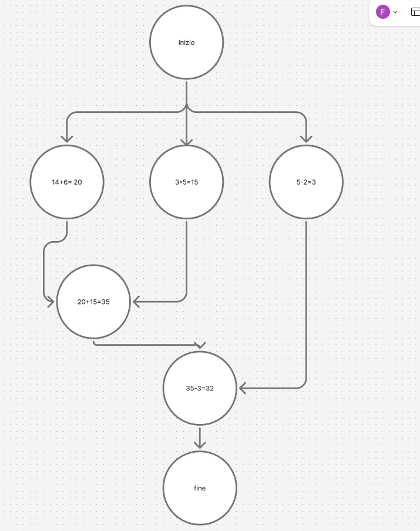

Cos'è un grafo delle precedenze
Un grafo delle precedenze è uno strumento grafico utilizzato per descrivere l'ordine con cui devono essere eseguite le istruzioni o le attività di un processo. È particolarmente utile nell'elaborazione concorrente, dove l'ordine delle operazioni non è sempre strettamente sequenziale.
A cosa serve?
Serve a:
- rappresentare le dipendenze tra le operazioni,
- stabilire un ordinamento parziale delle istruzioni,
- identificare quali attività possono essere eseguite in parallelo,
- ottimizzare la pianificazione e l'esecuzione dei task in un sistema multiprogrammato o multithread.
Simboli principali
- Ovale: rappresenta un'attività (singola o sequenza di istruzioni).
- Freccia: indica una precedenza tra due operazioni (una deve essere eseguita prima dell'altra).
Spazio per esempio
Inserisci qui sotto un esempio grafico esportato da Figma o altro software:
